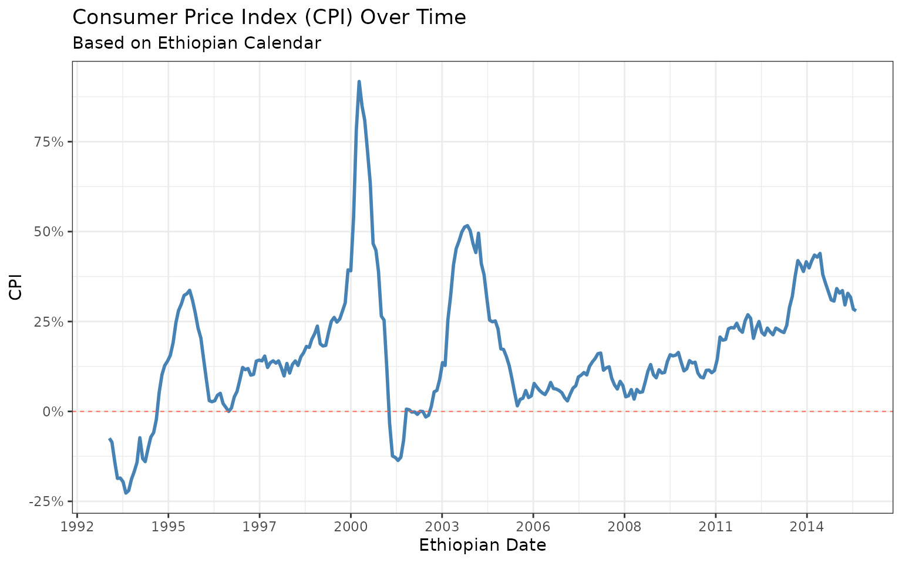
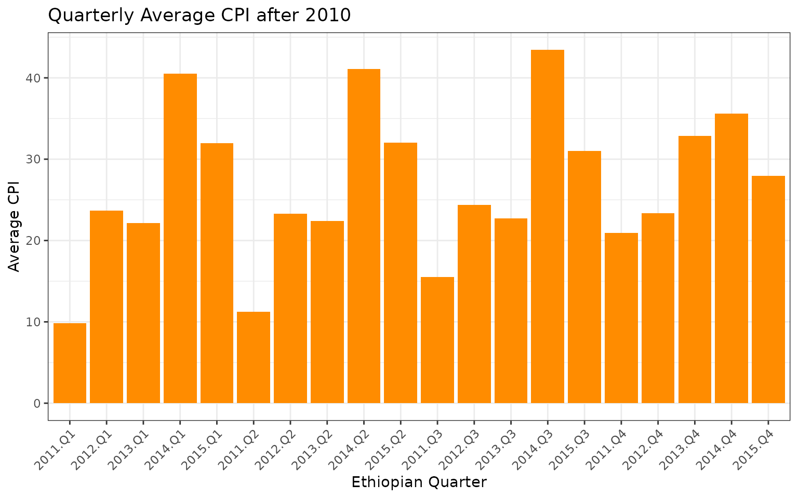

ethiodate and ggplot2
ggplot.RmdIntroduction
The ethiodate package provides a modern infrastructure for working
with Ethiopian calendar dates in R. One of its powerful features is the
ability to use ethdate objects seamlessly within the
ggplot2 ecosystem for data visualization.
This vignette walks through advanced use of ethiodate with ggplot2,
using the built-in cpieth dataset, which includes monthly
Consumer Price Index (CPI) data from 2001 onward.
Data
library(ethiodate)
library(ggplot2)
library(dplyr)
theme_set(theme_minimal(base_family = "Noto Sans Ethiopic"))
head(cpieth)
#> # A tibble: 6 × 2
#> date cpi
#> <date> <dbl>
#> 1 2001-01-31 -7.46
#> 2 2001-02-28 -8.54
#> 3 2001-03-31 -14.0
#> 4 2001-04-30 -18.6
#> 5 2001-05-31 -18.5
#> 6 2001-06-30 -19.6The cpieth dataset contains:
- date: Gregorian Date object
- cpi: Numeric consumer price index
Let’s convert date to ethdate. In addition, extract
different components of the date like year, month, and quarter
cpieth <- cpieth |>
mutate(edate = eth_date(date),
eyear = eth_year(edate),
emonth = eth_month(edate),
equarter = eth_quarter(edate))Basic CPI Time Series Plot
Let’s visualize the CPI trend overtime.
p <- ggplot(cpieth, aes(x = edate, y = cpi)) +
geom_line(color = "steelblue", linewidth = 1) +
labs(title = "Consumer Price Index (CPI) Over Time",
subtitle = "Based on Ethiopian Calendar",
x = "Ethiopian Date", y = "CPI") +
theme_bw()
p
What makes this plot powerful is that we’re using
theethdate object directly on the x-axis. There’s no need
to manually convert or relabel — it just works.
But wait — we can do better.
Here’s what we’re doing:
- Using
scale_x_ethdate()to customize year-based ticks - Applying
eth_labels("%Y")to format labels in Ethiopian years - Formatting CPI values as percentages for intuitive understanding
- Adding a zero baseline with
geom_hline()for visual reference
p +
scale_x_ethdate(breaks = eth_breaks(7),
labels = eth_labels("%Y")) +
scale_y_continuous(labels = scales::label_percent(scale = 1)) +
geom_hline(yintercept = 0, linewidth = 0.3, linetype = 2, color = "tomato")
This gives you a clean, elegant time series plot that speaks directly to Ethiopian policymakers and economists.
CPI Seasonality by Month and Year
Now, let’s understand seasonal CPI patterns across Ethiopian years:
cpieth |>
filter(eyear > 2005 & eyear < 2015) |>
ggplot(aes(x = emonth, y = cpi, group = eyear, color = factor(eyear))) +
geom_line() +
scale_x_continuous(breaks = 1:13, labels = eth_show(lang = "amh")) +
scale_y_continuous(labels = scales::label_percent(scale = 1)) +
labs(title = "CPI Seasonality by Ethiopian Year",
x = "Month", y = "CPI", color = "Year") +
theme_bw() +
theme(axis.text.x = element_text(angle = 45, vjust = 0.9, hjust = 1))
What we see here is how CPI values shift month-to-month, year-by-year
— with full support for the Ethiopian year. And by adding Amharic month
labels with eth_show(lang = "amh"), we speak the language
of our audience — literally.
Monthly CPI Heatmap
Heatmaps provide a quick visual summary of monthly price patterns:
cpieth |>
filter(eyear > 1993 & eyear < 2015) |>
ggplot(aes(x = factor(emonth), y = factor(eyear), fill = cpi)) +
geom_tile(color = "white") +
scale_fill_viridis_c(labels = scales::label_percent(scale = 1)) +
scale_x_discrete(labels = eth_show("%b", "amh")) +
labs(title = "Monthly CPI Heatmap",
x = "Ethiopian Month", y = "Ethiopian Year", fill = "CPI") +
theme_bw()
Heatmaps are excellent for revealing spikes, drops, and anomalies. In
just one frame, you can identify patterns like seasonal inflation or
economic shocks. The Ethiopian months are elegantly handled, and the
color legend is formatted as a percentage using
scales::label_percent() — no extra work needed.
Aggregated CPI by Quarter
This aggregation allows us to zoom out — highlighting macroeconomic
trends, policy shifts, or external shocks that affect quarterly
inflation. Again, we’re using eth_quarter() straight from
ethiodate — no need for hardcoded date logic.
cpieth |>
filter(eyear > 2010) |>
mutate(equarter = eth_quarter(edate)) |>
group_by(eyear, equarter) |>
summarise(mean_cpi = mean(cpi), .groups = "drop") |>
ggplot(aes(x = interaction(eyear, equarter), y = mean_cpi)) +
geom_col(fill = "darkorange") +
labs(title = "Quarterly Average CPI after 2010",
x = "Ethiopian Quarter", y = "Average CPI") +
theme_bw() +
theme(axis.text.x = element_text(angle = 45, vjust = 1, hjust=1))
Summary
The ethiodate package makes it simple and intuitive to visualize time series data using the Ethiopian calendar system. Key features include:
-
ethdateclass integration with ggplot2 - Built-in scale functions like
scale_x_ethdate(),scale_y_ethdate(),eth_breaks(), andeth_labels(). - Accessor functions:
eth_year(),eth_month(),eth_quarter(),eth_week() - Built-in dataset
cpiethfor ready-to-use exploration
These features make ethiodate an ideal tool for researchers and policymakers working in Ethiopia.